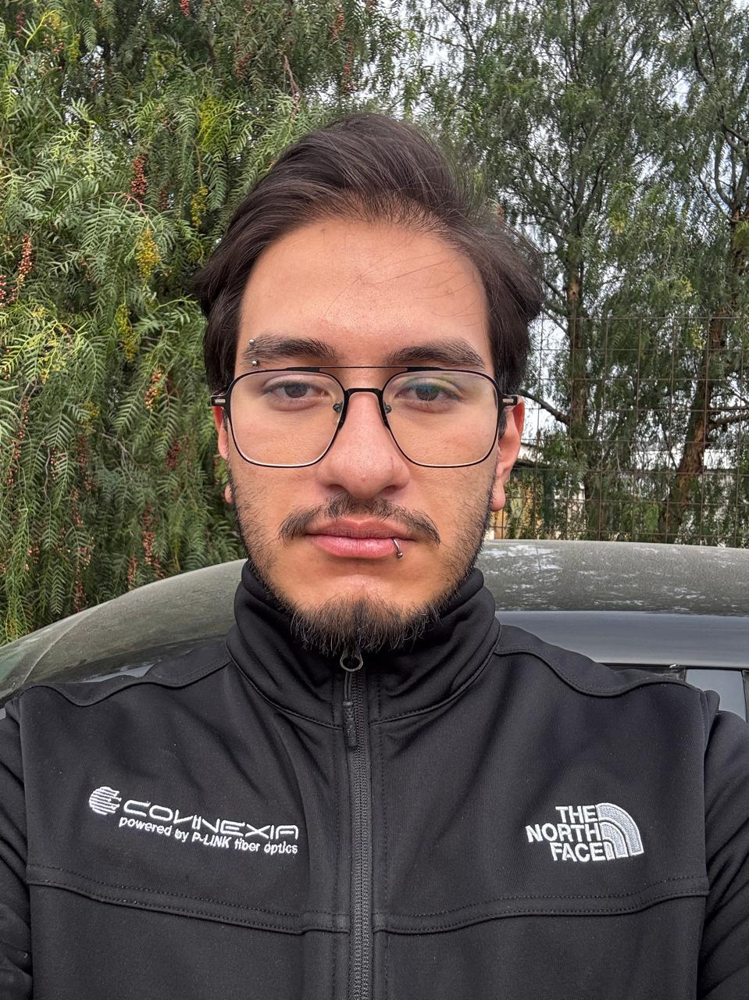
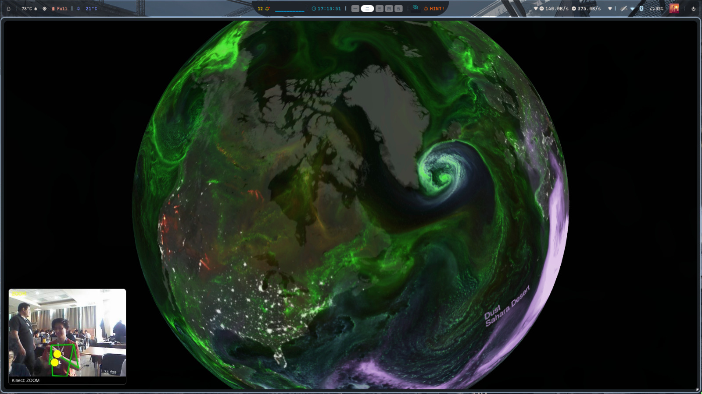
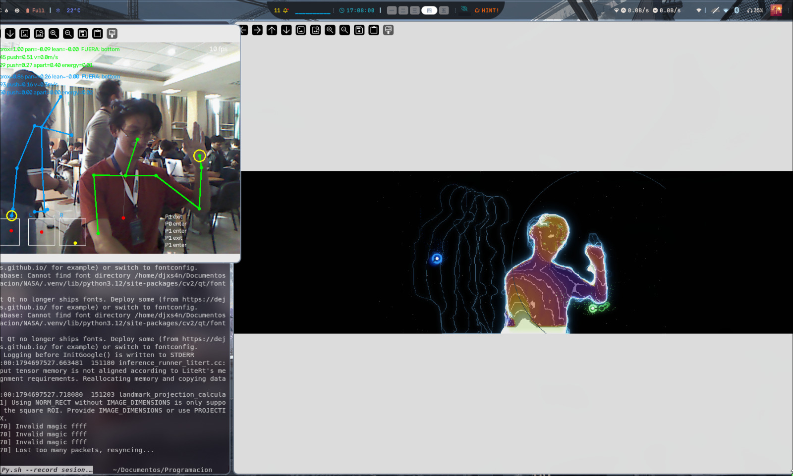

¿Quiénes somos?
AURALIS es un equipo conformado por 5 estudiantes de la Universidad Tecnológica de Durango (UTD), unidos por la pasión por la ciencia, la tecnología y la exploración espacial. Trabajamos juntos para desarrollar soluciones innovadoras, combinando nuestros conocimientos y creatividad en cada proyecto que emprendemos.
Nuestro equipo


Nuestro challenge para la NASA
Durante el hackathon desarrollamos una visualización interactiva del planeta Tierra controlada por gestos corporales y de manos, utilizando visión por computadora y datos satelitales de la NASA. El sistema permite explorar capas de información del planeta —como nubes de polvo del desierto del Sahara y vegetación— acercando, girando y navegando el globo sin tocar ningún teclado: solo con el movimiento.


Gráficas de rendimiento
Métricas aproximadas obtenidas durante las pruebas del prototipo en el hackathon.
Rastreo de manos (Kinect / cámara)
31 FPS
Procesamiento de pose corporal
10 FPS
Precisión en detección de gestos
92%
Renderizado del globo 3D
60 FPS
Github
Github Del proyecto.